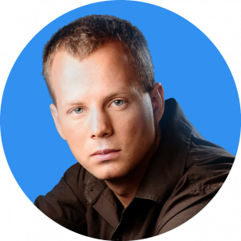

Ons team
Richard Delamore
Bestuursvoorzitter
Richard Delamore, bekend van zijn online-pseudoniem Evildea, is een Australische Esperanto YouTube-persoonlijkheid en een leidende figuur in de Esperanto filmindustrie. Al lang voor het medeoprichten van Amikumu, had Richard Esperanto-TV opgericht en zitting genomen in het bestuur van de Australische Esperanto-Vereniging (AEA), in de Language Festival Association (LFA) en in de Esperanto Federatie van Nieuw Zuid-Wales (EFNSW). Bovendien heeft hij zes jaar in het Australische leger gediend als signaal-operator en werkte hij voor talloze internationale bedrijven als een systeembeheerder.
Amikumu is an essential part of every language learner’s toolkit.
Stad
Sydney, Australië
Talen
Engels, Esperanto, Mandarijn
Chuck Smith
Chief Technical Officer and Mobile Developer
Chuck Smith is de medeorganisator van ondermeer de Polyglot bijeenkomst, inzender van de Esperanto cursus van Duolingo en oprichter van het Esperanto Wikipedia. Hij heeft sinds de Apple's App Store in 2008 van start gegaan iOS-apps ontwikkeld. Hij kreeg het idee voor een GPS-apparaat om collega Esperantisten te vinden toen hij in 2002 door Brazilië reisde, maar het duurde nog 15 jaar voordat de consumententechnologie zoiets makkelijk mogelijk kon maken en hij die droom kon nastreven. Nu verheugt hij zich om de problemen uit de weg te ruimen zodat mensen overal beter contacteen kunnen leggen en zo de wereld te verbeteren.
I love seeing all the great ways people are meeting up to speak different languages with Amikumu all over the world!
Stad
Berlijn, Duitsland (uit de Verenigde Staten)
Talen
Engels, Esperanto, Duits, Spaans, Frans, Nederlands, Pools, Amerikaanse Gebarentaal
Tanja Orme
Volunteer: Mobile Developer / Customer Support
Tanja is a stay at home geek who has extensive experience in customer support (both front and back office) for several ISPs. In her free time she codes, creates various items with yarn and plays videogames (or does the New York Times crossword puzzle).
After re-entering the world of Esperanto, she voluntarily helped rewrite the code for the current version of Amikumu, as well as being responsible for the layout.
Amikumu makes it so easy to meet new people who share my interests, no matter where I am. I love working on an app that I use myself and help users get the best experience out of it!
Stad
Amsterdam, The Netherlands
Talen
Dutch, English, Esperanto, baby-German
Judith Meyer
Backendontwikkelaar
Judith Meyer is een computationele taalkundige die het grooste deel van haar tijd besteedt aan het ontwikkelen van webapplicaties die met talen werken, zoals haar project LearnYu. Ze is ook een polyglot, medeorganisator van de Polyglot Gathering en auteur van vele taalboeken en taalcursussen. Ze leerde Esperanto toen ze 14 jaar oud was om het als een springplank te gebruiken om veel andere talen te leren.
Amikumu is a boon for polyglots like me – I'm always surprised by who speaks Greek, Hebrew or Indonesian around me.
Stad
Berlijn, Duitsland
Talen
Duits, Engels, Esperanto, Latijn, Frans, Italiaans, Nieuwgrieks, Mandarin, Nederlanda, Spaans, Indonesisch, Hebreeuws, Swahili
Jesse Alter
Systeembeheerder
Jesse Alter is een Linux-systeembeheerder met diploma's in informatica en sociaal werk. Door de jaren heen heeft Jesse servers onderhouden voor meerdere websites en diensten terwijl hij werkte als kindermaatschappelijk werker. Later veranderde hij van carrière om zijn levenslange interesse in het ontwikkelen en onderhouden van computersystemen te volgen. Naast Amikumu interesseert Jesse zich ook in retrocomputing, informatieprivacy en data-analyse.
Amikumu gives me the ability to instantly find language partners for any language I know or am interested in, wherever I am. Voor mij is dat een superkracht.
Stad
Philadelphia, Verenigde Staten
Talen
Engels, Esperanto
Elena Choesanova
Grafisch ontwerper
Elena Choesanova is een ervaren grafisch ontwerper met een diploma in de theorie van de architectuur. Na haar afstuderen leerde ze Esperanto en heeft ze sindsdien voor meerdere organisaties en evenementen gewerkt. Hoogtepunten zijn onder meer haar vrijwilligerswerk voor E@I in Slowakije en het 101e Esperanto-Wereldcongres. Onlangs heeft ze een eigen project voltooid: kaarten voor het spel “Weerwolven”.
The beauty of Amikumu is that it doesn’t only help me find new language partners, but also make new friends offline.
Stad
Jekaterinenburg, Rusland
Talen
Engels, Russisch, Esperanto, Slowaaks, Zweeds, Toki Pona